功能描述
节点的审批人员是批谁参与了节点的审批，当配置了该任务的执行人员时，流程流转至该节点时，这些人员的待办中即会出现对应的审批任务。
操作步骤
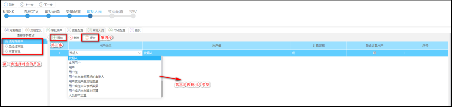
【用户类型规则说明】
第一步：点击流程任务节点
第二步：【添加】按钮
第三步：在新增加的行中的用户类型列中，选择对应的下拉类型，然后根据不同的下拉类型，点击用户值列的单元格。
第四步：点击保存按钮。
用户类型有多种，每种适应不同的场景下的人员查找算法。
发起人：代表该节点由发起人来处理
用户：代表用户由选择具体的用户来执行，如：
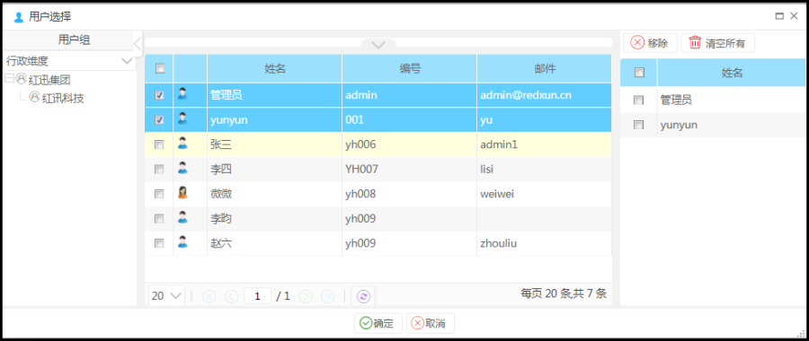
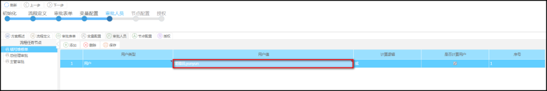
以上则代表由以上的选择两个人来执行
用户组：
表示该节点的审批人员由用户组下的用户来执行，一般来说包括：部门、角色、职务等下的用户。如：
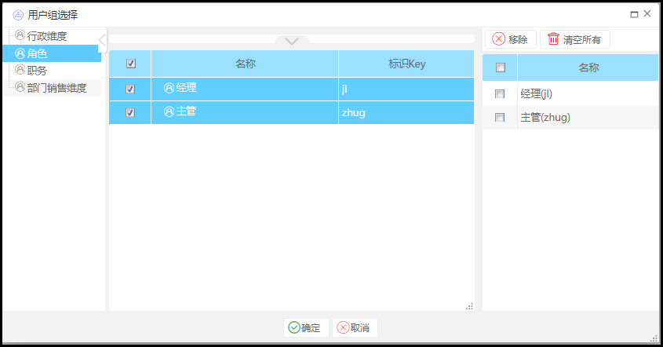

以上用户可由用户组下的用户来执行，同时跟第一行的用户【郭靖、蔡明】等用户集合一起。
用户来自其他节点的审批人：
表示该节点的审批人与另一节点的审批人相同，一般 另一节点是指运行流程的已审过的节点的审批人
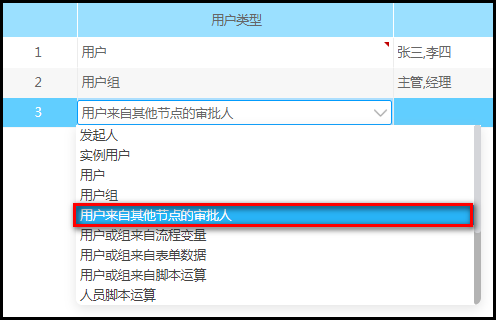
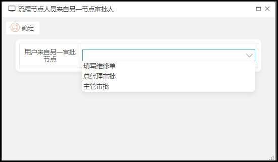
用户或组来自流程变量：
表示该节点的审批人通过【变量配置】中获取表单中的用户或者用户组作为审批人员。如：
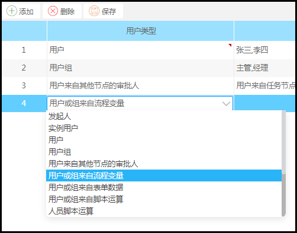
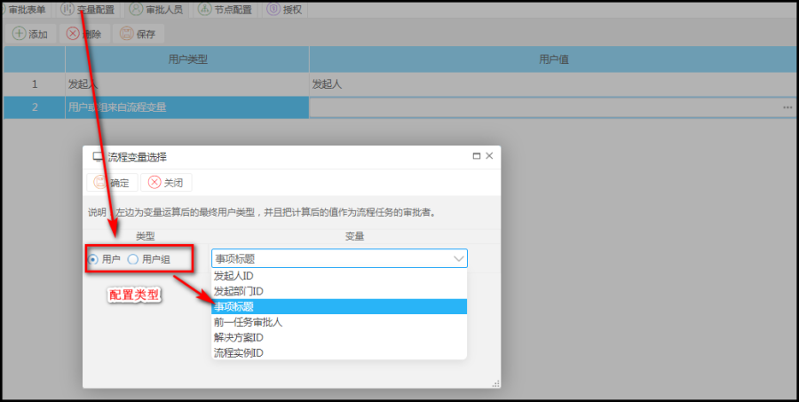
用户或组来自表单数据：
表示该节点审批人员使用表单中的用户类型,通过计算后的值作为流程任务的审批人员。如：
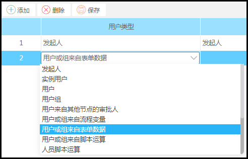
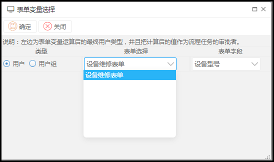
用户或组来自脚本运算：
表示该节点的审批人员通过编写java脚本计算出的值作为流程任务的审批人员。如：
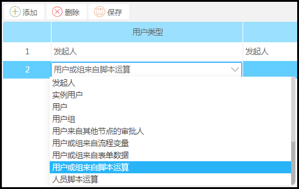
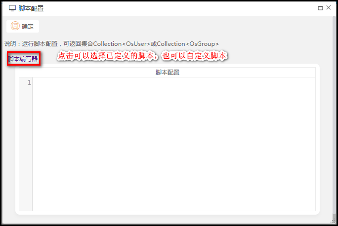
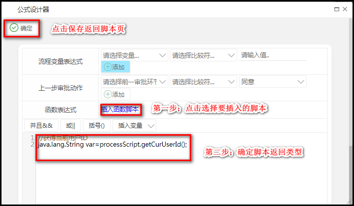
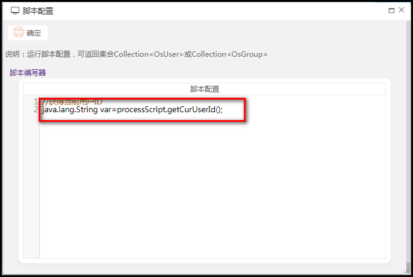
人员脚本运算：
表示该节点审批人员通过配置人员脚本,该功能模块中定义java脚本,计算脚本中的值作为流程任务的审批人员。如：
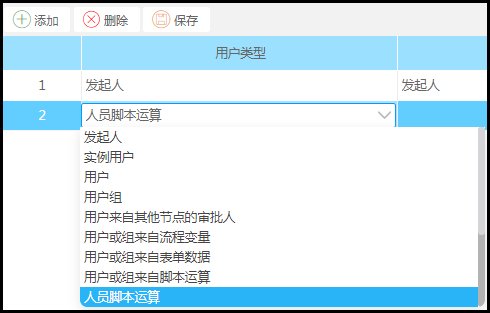
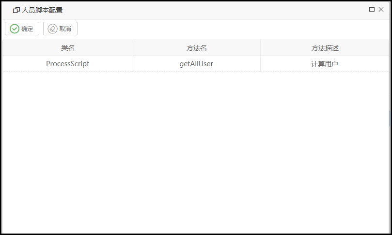
用户来自用户所在部门下的用户组用户：
表示该节点审批人员由所选用户变量(不支持选择用户组变量)所在部门下的用户组中的用户作为审批人员。如：

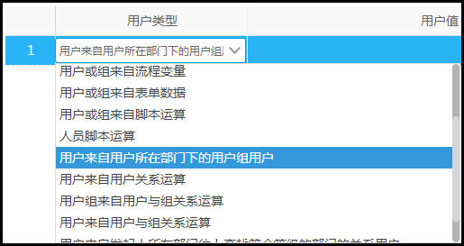
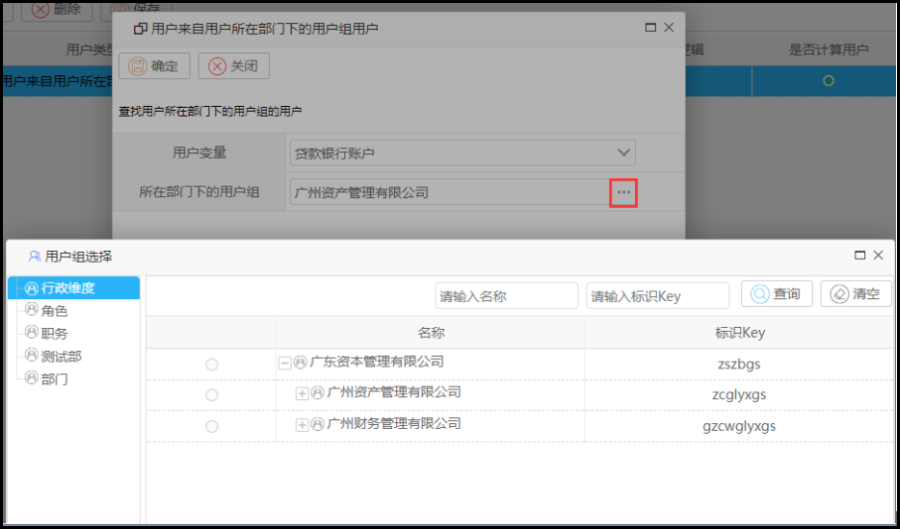
用户来自用户关系运算：
表示该节点审批人员通过所选用户变量(不支持选择用户组变量)在选择关系类型,通过关系类型查找用户的关系方作为流程任务的审批人员。如：
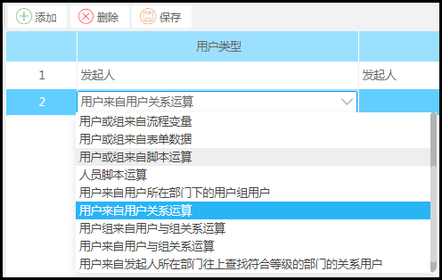
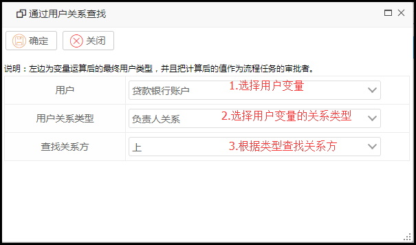
用户组来自用户与组关系运算：
表示该节点审批人员根据所选用户变量(不支持选取用户组变量)在选取用户关系类型,查找用户所在用户组中用户与组关系,计算出的关系值作为审批人员。如：
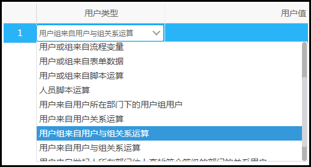
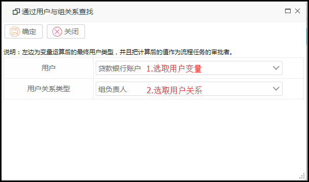
用户来自用户与组关系运算：
表示该节点审批人员是由所选用户组,通过组查找关系计算出的值作为审批人员,用户一般可来自变量,指定用户组,发起人所在的部门,。如：
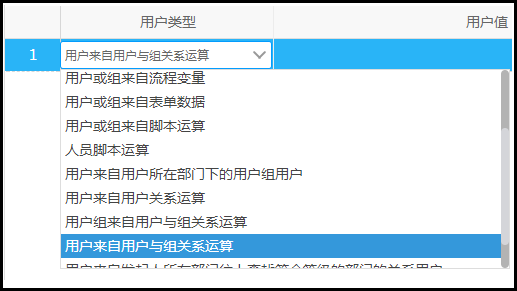
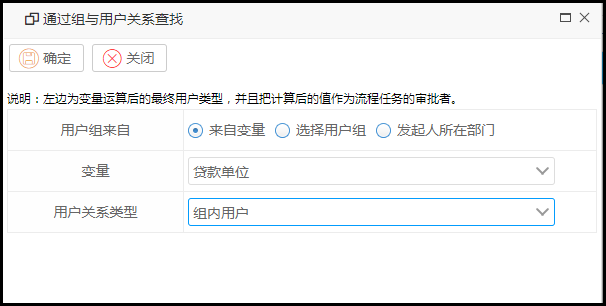
用户来自发起人所在部门往上查找符合等级的部门的关系用户：
表示该节点审批人员由发起人所在部门往上找符合所选取等级的用户组,计算符合等级用户组中的值作为审批人员。如：
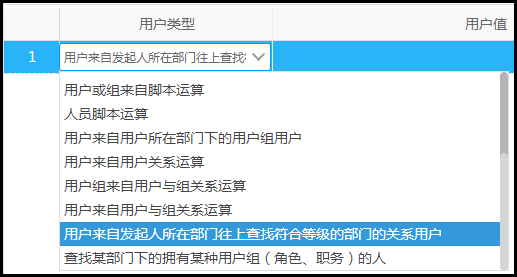
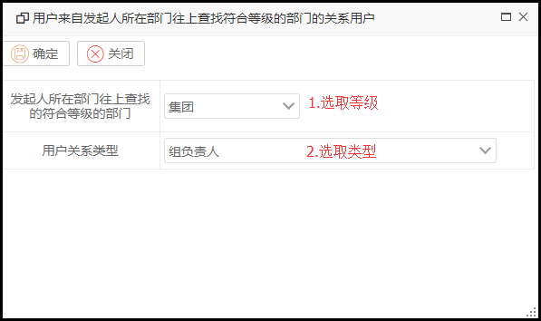
查找某部门下的拥有某种用户组（角色、职务）的人：
表示该节点审批人员。如：
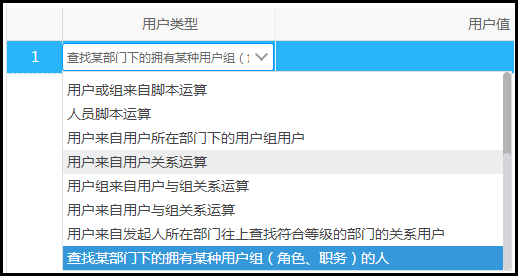
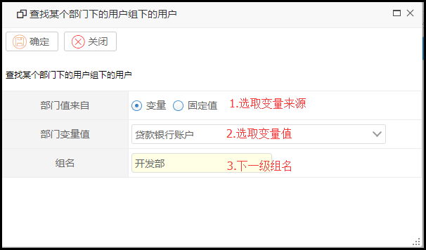